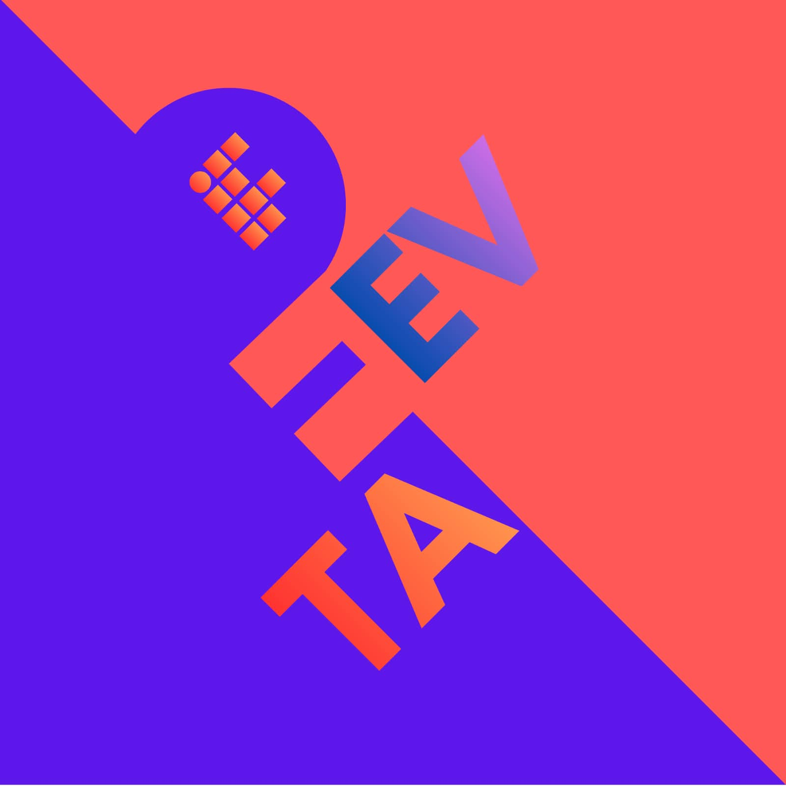

A formação do nosso grupo nasceu no ponto de encontro entre a nostalgia e o design de experiências. Durante as discussões iniciais da disciplina de Prática Profissional, ao analisar como a tecnologia molda o comportamento humano, percebemos um interesse em comum: a memória afetiva ligada à era de ouro dos videogames. Relembrando a época em que "jogar junto" significava dividir o mesmo sofá, trocar dicas de revistas ou passar o controle a cada vida perdida, notamos que os jogos retrô tinham uma capacidade única de gerar conexões diretas e espontâneas. Foi a partir dessa afinidade que estruturamos nosso projeto. O objetivo é investigar como as mecânicas, a estética em pixel art e a simplicidade dos games clássicos podem ser resgatadas para criar interações mais humanas e engajantes no cenário atual.